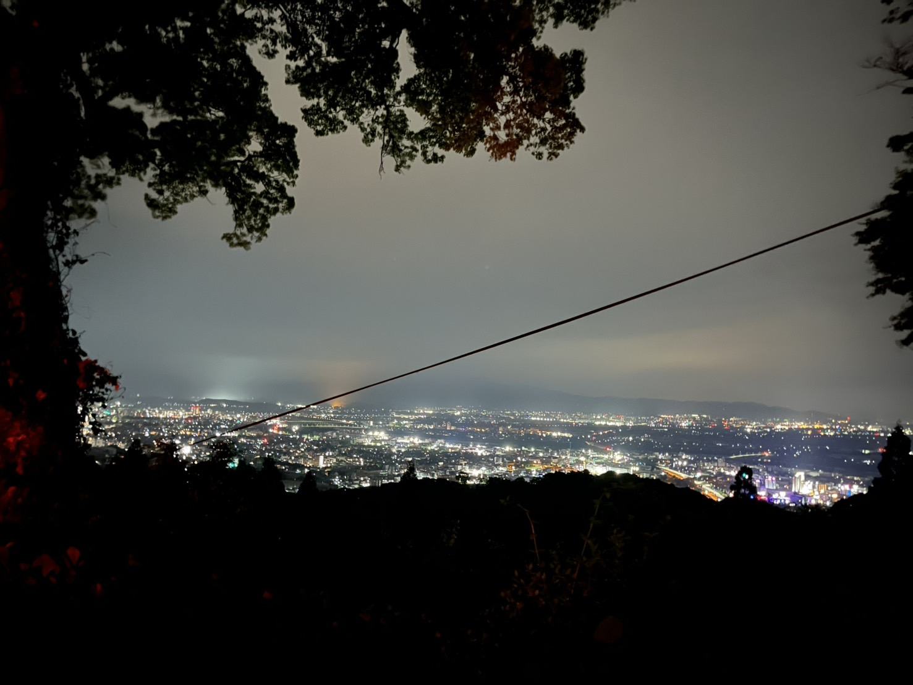

久留米市の東部に位置する高良山は、標高312mの山頂付近から久留米市街地を一望できる人気の夜景スポットです。展望台からは街に広がる明かりや筑後平野の景色を眺めることができ、夜になると幻想的な雰囲気に包まれます。
自然に囲まれた静かな環境が魅力で、ドライブやデートにもおすすめの場所です。季節や時間帯によって変化する景色を楽しみながら、ゆっくりと夜の時間を過ごすことができます。
住所：福岡県久留米市御井町
アクセス：JR久留米大学前駅から車で約15分
九州自動車道「久留米IC」から車で約15分
料金：無料
八女市にある星野村は、周囲の明かりが少なく、美しい星空を楽しめることで知られる自然豊かなエリアです。空気が澄んだ夜には、都会では見ることのできない数多くの星が夜空いっぱいに広がり、幻想的な景色を楽しめます。
星の文化館などの施設では天体観測も楽しむことができ、夜景とは違った「自然が作り出す光の景色」を味わえるスポットです。静かな場所で癒されたい人や、特別な夜を過ごしたい人におすすめです。
住所：福岡県八女市星野村
アクセス：九州自動車道「八女IC」から車で約50分。
料金：無料（一部施設は有料）
高良山のふもとに位置する青峰団地周辺は、高台にあるため久留米市街を見渡すことができる隠れたビュースポットです。
夜になると街の明かりが広がり、住宅街の光と遠くまで続く景色を静かに楽しむことができます。
有名な高良山ほど観光地化されていないため、人が少なく落ち着いた雰囲気が魅力。地元の人が知る穴場スポットとして、ゆっくり夜景を眺めたい人やドライブ途中の立ち寄り場所におすすめです。
住所：福岡県久留米市青峰周辺
アクセス：西鉄バス「青峰団地」バス停から徒歩約5分
料金：無料